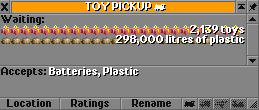
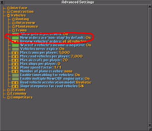

Train orders
In the last game I’ve noticed that quite a few stations like the following one. 
The toy pickup should only have toys waiting because that is what gets picked up there, but it also has plastic waiting.

What causes this problem? It is caused by trains having incorrect orders, usually only toy trains go to this station but when a part of the network gets rebuild or when a hub has missing connections then trains might use other stations to detour and get on their way to their destination. If these detouring trains don’t have proper orders then they will stop at every intermediate station. 
The solution to this is quite simple: just create non-stop orders. You can do this simply via the order window by clicking the non-stop button. This leaves a problem of its own however: you can easily forget this step. Fortunately the OpenTTD devs have made a solution for this: an advanced setting.
When you have this option enabled all orders will be non-stop by default and thus you cannot forget to do it manually. Every #openttdcoop player should have this option enabled at all times, you might even call it a mandatory option. Unfortunately we can’t force the server to have this option enabled as devs have moved it to the network save option category a long time ago.

While I am writing this post I should also note that all trains should have shared orders at all times if they have the same orders. If you’re cloning trains then you should keep ctrl pressed while cloning, this will automatically share their orders. You can also share orders by pressing ctrl when you use the go to button on another train. Doing this without holding ctrl will simply copy the orders without sharing it.
Why do we want shared orders? Because they are a lot easier to edit. You can change the orders of an entire group of trains by just changing the orders of one of them, otherwise you would have to do the same for every single train.
If you want to change the orders of a single train in a group of shared orders trains you will have to click the last option in the order list though (the one which says “– End of shared orders –” and hit delete, this will unshare the orders for this train. This also has the downside of removing the orders from the train though.
Categories: Gameplay, Public Server
ODM April 14, 2010 12:30
Couldn’t agree with you more. Sharing orders should be a habit of every openttdcoop player. Maybe the devs can turn non-stop orders on by default? As in the setting’s default position is non-stop.
V453000 April 14, 2010 13:54
+1 from here
MrRuben5 April 14, 2010 23:24
I have to admit I had non stop turned off by default, and so in the current game I did gave some of my trains orders which didn’t have non stop. But I fixed them 🙂
Improving upon the orders I also found XeryusTC’s self regulating orders, which uses the conditional orders to scout off the stations for the same cargo type until the train is full. Then it goes to the drop zone 🙂
I have constructed a SRO piece of myself in the current game 🙂